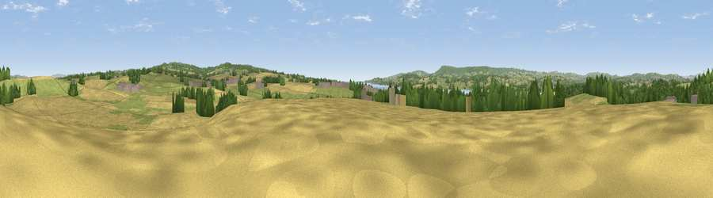

Viewpoint near Ebford
#19052 in England · top 34% of its area beats it · near EbfordThe view, rendered

A 360° render of this exact spot computed from the terrain model, tree cover and land cover — summer colours, afternoon light, calibrated against photographs of famous viewpoints. Real trees, hedges and buildings will differ in detail.
The panorama
Grey silhouette: terrain skyline in each direction (720 bearings, Earth curvature and refraction included). Dashed green: skyline with trees (+15 m) and buildings (+8 m) as obstacles. Blue strip: how far the ground is visible on each bearing.
Where the view opens
Wedge length = distance to the farthest visible ground on that bearing (vegetation-aware). Rings at 10, 25 and 50 km.
What fills the view
38% cropland · 36% grassland · 14% woodland · 8% water · 3% built-up ·
Angular shares of the visible panorama (visual magnitude), not map area. Landscape diversity 0.59 (0–1 Shannon).
Key numbers
More beautiful places nearby
The staircase of upgrades: each row has a higher view potential than everything closer. Driving times are estimates from straight-line distance, calibrated against real road routing — check an actual route before setting out.
| Place | Direction | Drive | Score |
|---|---|---|---|
| Viewpoint near Ebford | N · 1 km | ~3 min | 54.7 |
| Powderham Park | SW · 4 km | ~9 min | 60.3 |
| Viewpoint near Woodbury | ESE · 4 km | ~10 min | 69.3 |
| Viewpoint near Woodbury | E · 5 km | ~10 min | 72.2 |
| Viewpoint near Kenn | WSW · 8 km | ~17 min | 80.0 |
| Viewpoint near Kenton | SW · 8 km | ~17 min | 80.7 |
| Viewpoint near Knowle | SE · 9 km | ~17 min | 81.9 |
| Viewpoint near Kenton | SW · 9 km | ~18 min | 82.9 |
50.67627, -3.43681 · source: screening · position refined by local search. Computed location — check access rights before visiting.